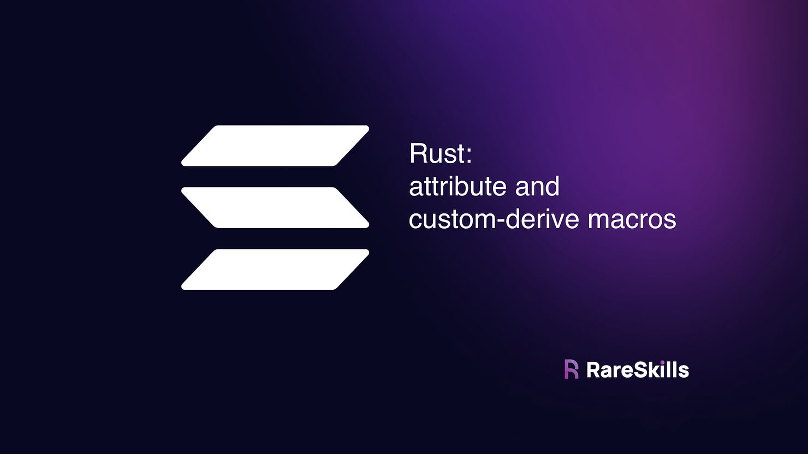
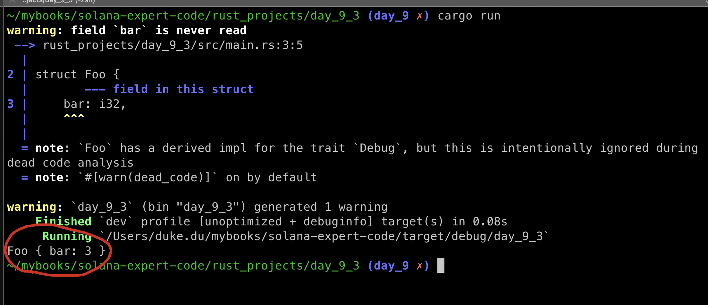

Attribute-Like AND Custom Derive MACROS

Three macros
normally we will encounter three types of macros within solana programs as below:
- Function-like macro: a wrapper to a function, it will expand during the compilation, such as:
msg!andprintln!. - Attribute-like macro: a wrapper to a struct, and can completely rewrite it.
- Custom derive macro: a wrapper to a struct which will augments it with additional functions but cannot alert it.

we have discussed about: function-like macro before and will cover the rest here today.

Impl
A impl is similar to a lib in solidity, we can bind some functions to a lib and use it with the syntax myLib.newFunction().
in rust, we can use the keyword implto associate functions to a struct, we can test it in playground.
struct Person {
name: String,
age: u8,
}
impl Person {
fn new(name: String, age: u8) -> Self {
return Person { name, age };
}
fn can_drink(&self) -> bool {
return self.age >= 21;
}
fn get_age(&self) -> u8 {
return self.age;
}
}
fn main() {
let alice = Person::new("Alice".to_string(), 30);
println!("Can Alice drink? {}", alice.can_drink());
println!("Alice's age: {}", alice.get_age());
}
// Output:
Can Alice drink? true
Alice's age: 30
now we have associated three functions with struct Person.
Traits
Rust Traits are a way to implement shared behavior among different impls. Think of them like an interface or abstract contract in solidity ---- any contract that uses the interface must implement certain functions.
Think of them like polymorphism in C++, be attention to function get_speed below, it accepts different instance ofimpl and gets different result accordingly.
// Traits are defined with the `trait` keyword followed by their name
trait Speed {
fn get_speed_kph(&self) -> f64;
}
// Car struct
struct Car {
speed_mph: f64,
}
// Boat struct
struct Boat {
speed_knots: f64,
}
// Traits are implemented for a type using the `impl` keyword as shown below
impl Speed for Car {
fn get_speed_kph(&self) -> f64 {
// Convert miles per hour to kilometers per hour
self.speed_mph * 1.60934
}
}
// We also implement the `Speed` trait for `Boat`
impl Speed for Boat {
fn get_speed_kph(&self) -> f64 {
// Convert knots to kilometers per hour
self.speed_knots * 1.852
}
}
// Function to get the speed in km/h for any type implementing the Speed trait
fn get_speed(transport: &dyn Speed)-> f64 {
return transport.get_speed_kph();
}
fn main() {
// Initialize a `Car` and `Boat` type
let car = Car { speed_mph: 60.0 };
let boat = Boat { speed_knots: 30.0 };
// Get and print the speeds in kilometers per hour
let car_speed_kph = car.get_speed_kph();
let boat_speed_kph = boat.get_speed_kph();
println!("Car Speed: {} km/h", car_speed_kph); // 96.5604 km/h
println!("Boat Speed: {} km/h", boat_speed_kph); // 55.56 km/h
// polymorphism
println!("Polymorphism Car Speed: {} km/h", get_speed(&car));
println!("Polymorphism Boat Speed: {} km/h", get_speed(&boat));
}
output:

Att-like macro
we can use attribute-like macro to change a struct, the technique beneath the surface is impl we just described.
we test in rust_projects other than anchor programs.
mkdir rust_projects
cd rust_projects
cargo new day_9_1
update the day_9_1/Cargo.toml as below:
[lib]
proc-macro = true
[dependencies]
syn = {version="1.0.57",features=["full","fold"]}
quote = "1.0.8"
add fields into a struct
we will define a attribute-like macro: #[foo_bar_attribute] and attach it to the simple struct below:
struct MyStruct {
baz: i32
}
within this macro, we will alter MyStruct by:
- adding two new fields
fooandbarof type i32 - adding a new function
double_foowhich returns twice the integer value of whatever foo is holding.
update the following code to day_9_1/src/main.rs
// day_9_1/src/main.rs
use day_9_1::foo_bar_attribute;
#[foo_bar_attribute]
struct MyStruct {
baz: i32,
}
fn main() {
let demo = MyStruct::default();
println!("struct is {:?}", demo);
let double_foo = demo.double_foo();
println!("double foo is {}", double_foo);
}
create day_9_1/src/lib1.rs:
// day_9_1/src/lib1.rs
// Importing necessary external crates
extern crate proc_macro;
use proc_macro::TokenStream;
use quote::quote;
use syn::{parse_macro_input, ItemStruct};
// Declaring a procedural attribute-like macro using the `proc_macro_attribute` directive
// This makes the macro usable as an attribute
#[proc_macro_attribute]
// The function `foo_bar_attribute` takes two arguments:
// _metadata: The arguments provided to the macro (if any)
// _input: The TokenStream the macro is applied to
pub fn foo_bar_attribute(_metadata: TokenStream, _input: TokenStream) -> TokenStream {
// Parse the input TokenStream into an AST node representing a struct
let input = parse_macro_input!(_input as ItemStruct);
let struct_name = &input.ident; // Get the name of the struct
// Constructing the output TokenStream using the quote! macro
// The quote! macro allows for writing Rust code as if it were a string,
// but with the ability to interpolate values
TokenStream::from(quote! {
// Derive Debug trait for #struct_name to enable formatted output with `println()`
#[derive(Debug)]
// Defining a new struct #struct_name with two fields: foo and bar
struct #struct_name {
foo: i32,
bar: i32,
}
// Implementing the Default trait for #struct_name
// This provides a default() method to create a new instance of #struct_name
impl Default for #struct_name {
// The default method returns a new instance of #struct_name
// with foo set to 10 and bar set to 20
fn default() -> Self {
#struct_name { foo: 10, bar: 20}
}
}
impl #struct_name {
// Defining a method double_foo for #struct_name
// This method returns double the value of foo
fn double_foo(&self) -> i32 {
self.foo * 2
}
}
})
}
Result: cargo run

remove fields from a struct
cd rust_projects
cargo new day_9_2
Main.ts
use day_9_2::destroy_attribute;
#[destroy_attribute]
struct MyStruct {
baz: i32,
qux: i32,
}
fn main() {
let demo = MyStruct { baz: 3, qux: 4 };
println!("struct is {:?}", demo);
}
lib.rs
// src/lib.rs
// Importing necessary external crates
extern crate proc_macro;
use proc_macro::TokenStream;
use quote::quote;
use syn::{parse_macro_input, ItemStruct};
#[proc_macro_attribute]
pub fn destroy_attribute(_metadata: TokenStream, _input: TokenStream) -> TokenStream {
let input = parse_macro_input!(_input as ItemStruct);
let struct_name = &input.ident; // Get the name of the struct
TokenStream::from(quote! {
// This returns an empty struct with the same name
#[derive(Debug)]
struct #struct_name {
}
})
}
cargo run:

we got two errors on the compliation stage, this means baz and qux are no longer belong to MyStruct as expected!!
Derive macro
This support a way to augment a struct without changing it, a derive macro can, among other things, attach an impl to a struct.
struct Foo {
bar: i32,
}
pub fn main() {
let foo = Foo { bar: 3 };
println!("{:?}", foo);
}
The code will not compile cos structs are not "printable".
To make them printable, they need an impl with a function fmt which returns a string representation of the struct. If we do the following instead:
#[derive(Debug)]
struct Foo {
bar: i32,
}
pub fn main() {
let foo = Foo { bar: 3 };
println!("{:?}", foo);
}
result:

can get the code from day_9_3.
Anchor #[pragram]
The attribute #[pragram] is modifying the module behind the scenes. For example, it implements a router that automatically directs incoming blockchain instructions to the appropriate functions within the module.
Key Takeaways
- An impl is a group of functions that operate on a struct. They are “attached” to the struct by using the same name as the struct.
- A trait enforces that an impl implements certain functions
- An attribute-like macro takes in a struct and can completely rewrite it.
- A derive macro augments a struct with additional functions.
Links
- day_9 original article: https://www.rareskills.io/post/rust-attribute-derive-macro
- source code: https://github.com/dukedaily/solana-expert-code/tree/day_9